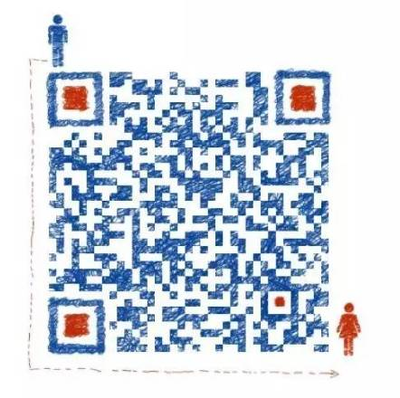
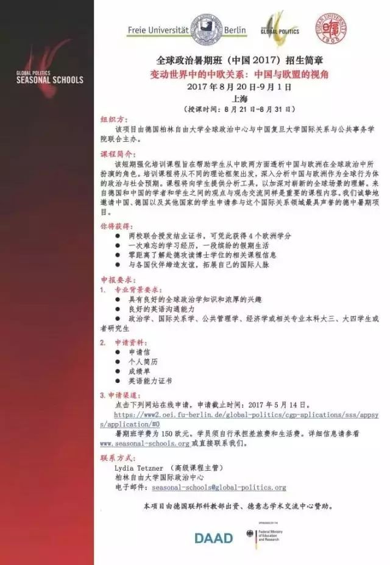
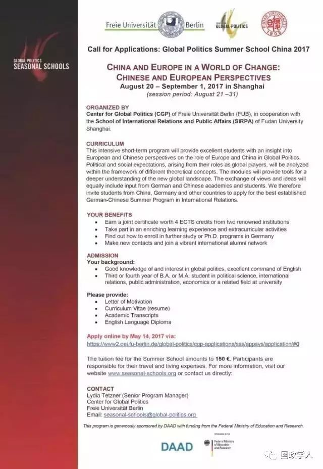

收录于合集

链接请长按——选择复制——在浏览器中打开
一、清华大学关于举办第一届“国际关系理论研讨班”的通知
本信息来源：国际关系预测
（ID: IRtongxun）
**
**
为推动我国国际关系及相关学科建设，提高我国国际关系理论研究的创新水平，清华大学国际关系研究院决定于2017年7月在北京举办第一届“国际关系理论创新研讨班”。现将研讨班的有关事宜做如下说明，欢迎学界同仁积极参与。
一、与会对象与录取原则
研讨班主要面向国际关系及相关专业的青年教师、博士后和已通过资格考试的博士生（年龄不超过40岁），男女机会平等，已发表国际关系理论研究成果和主讲国际关系理论课程的青年教师优先。
二、研讨主题与内容
1. 国际关系理论研究/教学现状 评估中国国际关系理论研究和教学现状，研讨分析如何通过改革教学内容和教学方式推动中国国际关系理论研究创新，以及如何结合国际关系理论研究进展完善课程体系和教学内容；
2．国际关系理论的发展趋势 以近五年中外文国际关系及相关领域学术期刊论文为基础，研讨分析国际关系理论的发展趋势和研究重点，探讨中国国际关系理论研究的发展方向和创新路径；
3. 国际关系理论创新实践交流 邀请2-3位致力于国际关系理论创新的学者交流创新经验和挫折经历，同时邀请相关学者担任主评论人引导相关研讨。理论创新实践部分将是研讨交流的核心内容。
三、研讨班费用与待遇
**
**
研讨班不收取任何费用，研讨班期间与会者的食宿、交通及其它相关费用自理。
研讨班所有与会者将获赠最新的《国际政治科学》杂志；同时主办方将遴选若干位积极参与研讨的与会者并提供 Chinese Journal of International Politics （CJIP）电子版一年的免费访问权限。
四、研讨班时间与地点
研讨班举办时间为2017年7月3-4日，地点在清华大学。
五、报名方式
请有意参加研讨班的教师或学生填写好报名表（见附件，报名表可复印）并加盖所在机构或就读院系公章，于2017年5月31日之前将扫描件发至联系邮箱（cong- zha16@mails.tsinghua.edu.cn），也可传真（010-62773173）或邮寄至清华大学国际关系研究院（如电邮或邮寄，请在邮件标题或信封上注明“研讨班报名”）。主办方将根据报名表进行遴选并于2017年6月7日之前通知录取结果。
报名表请复制下面链接在浏览器中打开下载！
六、联系人及联系方式
联系人：张聪 孙学峰
电 话：（010）62788801；15311178368
传 真：（010）62773173
电子邮件：cong-zha16@mails.tsinghua.edu.cn
通讯地址：北京市海淀区清华大学明斋304清华大学国际关系研究院 （邮编：100084）
二、暨南大学海国图智研究院第四期SSCI写作与发表训练营报名
本信息来源：海国图智日播报
(ID: haitunews)
活动目的
在学术圈中总有一种声音在说，论文写作实际上相当于“新八股”。实则不然，在海图看来，论文的写作是一场修行，一次邂逅，一个自我和现实的对话。每篇优秀的论文都是有其灵魂的，技巧的包装只是一种推广的方式，内容才是王道。在对顶级期刊的作者研究中发现，中国籍的论文作者越来越常见，但这终究还是不够的。海国图智研究院在与各高校的联系和合作中发现在高校中，有很多优秀的文章，观点新颖，在技巧上欠缺些许火候，使其不能闻达于世，这不得不说是一个遗憾。我们邀请到了数位在论文写作上颇有心得的导师，我们希望能够结此善缘，把更多优秀的文章推广到更广阔的平台去。
课程流程
时间：
2017年6月11日~18日
地点：
中国·广州 天河区马赛国际商务中心2709室
培训内容：
1）SSCI与CSSCI论文写作、发表技巧揭秘
导师亲身讲述他们最新论文研究成果，让你了解导师是如何别出心裁地进行选题与开题的。在这一环节中，除讲述一般的写作规则外，他们还会分享成功的经验与失败的教训，进而你会发现导师是如何做学问的，如何思考的。导师还将就目前SSCI与CSSCI社会科学类论文主流研究方法进行剖析，让你在搜集材料和确定论证角度时有的放矢。
2）步步为营，扎实写作功底：
1. 学术写作： 包括结构、段落、语句、词语等文字逻辑的写作和修改。
2. 文献回顾： 包括经典文献的梳理回顾，对经典文章的细读剖析，从而进行经验总结，培养文章写作思路。
3. 论文写作： 通过案例讲解，明确论文写作的重要步骤。
4. 投稿技巧： 包括如何选择正确的期刊，如何与期刊编辑和审稿人的沟通，如何回应他们的批评。
5. 写作效率： 包括如何集体写作，减轻拖延症困扰，写作心理学等。
3)：实践操作
实地练习写作，围绕论文主题动笔操刀。导师现场给予修改意见、建议。此外，你可以和导师分享你在学术过程中遇到的难题与困惑，导师将为你一一为你解答。
4)：导师一对一交流机会
你需要自带作品，导师将就你的论文写作具体情况为你辅导咨询。
导师介绍
（部分邀请未确定；名单按姓名首字母排序）
陈定定
陈定定，现为 暨南大学国际关系学院/华侨华人研究院教授，著名社会智库海国图智研究院院长 。另外，他兼任 国际研究学会（ISA）亚太区副主席 ，德国全球公共政策研究所客座研究员。陈定定长期从事国际关系理论、中美关系、中国外交和国际公众舆论等学术领域的研究，并取得丰硕成果。他于2007年在芝加哥大学获得政治学博士学位，2006-2007年在哈佛普林斯顿中国与世界研究项目任客座研究员，2007-2009年在汉密尔顿学院政府系任访问教员，2009-2016年在澳门大学政府与行政系任助理教授。陈定定的主要学术著作包括编著《国际关系中的预测：理论与实践》，与译著《国家为何而战》。他曾发表大量的学术文章、政论时评和著作，刊载在不同的国内外权威和核心期刊杂志上，如《国际安全》、《华盛顿季刊》、《国际研究季刊》等。此外，他还是著名国际问题英文杂志《外交官》的专栏作家。在2016美国大选中，陈定定教授成功预测特朗普的获胜，在国内外学界引起较大反响，受邀在美国对外关系委员会（CFR）举行以中美关系为主题的讲座，洛杉矶时报也对其进行了专访报道。
Daniel H Nexon
丹·尼森， 乔治城大学政府和外交学院副教授，现任《国际研究季刊》（ International Studies Quarterly）主编。 他曾在斯坦福大学国际安全与合作中心和俄亥俄州立大学梅森国际研究中心获得奖学金。在2009-2010年期间，他在美国国防部担任外交关系国际事务研究员。丹·尼森专注于国际安全与国际关系理论。他目前的研究重点是作为权力政治的国家和工具，特别是在不平等的国际关系的背景下。丹·尼森教授的工作涉及国际关系理论，美国外交政策，强权政治，宗教争议政治以及大众文化与世界政治关系等问题。他是《现代欧洲早期争取权力斗争：宗教冲突，帝国主义和国际变迁》（普林斯顿大学出版社，2009年）的作者，2010年获得国际安全研究（ISSS）颁布的最佳图书奖。他的文章大量发表在美国政治学评论，欧洲国际关系杂志，国际研究评论，国际研究季刊，国际研究评论，国际政治经济评论和世界政治等。
方松英
方松英， 美国莱斯大学（Rice University）政治学系副教授 ，研究领域包括国际组织、国际冲突、博弈论模型及中美关系等。 目前担任《国际组织》（International Organization）、《 美国政治学评论》(American Political Science Review) 编委之一。 她于2006年获得罗切斯特大学政治学博士学位，2005 至2009年任教于明尼苏达大学，2009年至今任教于莱斯大学，曾在普林斯顿大学尼豪斯全球化与治理研究中心（Niehaus Center for Globalization and Governance）及斯坦福大学的胡佛研究所做访问学者。她在《美国政治科学》（American Journal of Political Science）、《国际组织》（International Organization）、《国际研究季刊》（International Studies Quarterly）、《政治学杂志》（Journal of Politics）、《政治科学季刊》（Quarterly Journal of Political Science）等期刊发表论文10余篇。
Giorgio Dharam Singh Shani
Giorgio Shani，是 日本国际基督教大学（ICU）的政治和国际关系教授 ，伦敦经济政治学院国际研究中心访问高级研究员。目前，他还担任 国际研究学会（ISA）亚太区主席 。他的主要研究兴趣集中在南亚和日本的宗教与政治，批判性地研究人类安全和西方国际政治理论。他是《全球时代的锡克族民族主义和身份认同》（Routledge 2007）《宗教，身份和人类安全》（Routledge 2014）的作者。
李晓隽
李晓隽，现任 英属哥伦比亚大学政治学系助理教授 。 他拥有斯坦福大学政治学博士学位，乔治亚大学政治学和统计学双硕士学位。他曾是哈佛大学费正清中国研究中心(Fairbank Center for China Studies, Harvard University)的博士后研究员。他在 SSCI 杂志发表论文多篇，在统计学和定量方法方面有专长。他的研究重点是中国的国内和国际政治经济。
T.V. Paul
T.V. Paul， 麦吉尔大学政治学系国际关系教授 ，他在加州大学洛杉矶分校获得博士学位。 他在2016-2017年期间担任 国际研究学会（ISA）主席 ，并担任麦吉尔大学-蒙特利尔大学国际和平与安全研究中心（CIPSS）的创始主任。T.V. Paul曾任加州蒙特利海军研究生院国家安全事务教授（2002-03），哈佛大学国际事务中心（CFIA）和奥林战略研究所（1997-98年）访问学者。
王建伟 ****
王建伟，复旦大学国际政治系法学学士和硕士，美国密歇根大学政治学博士。现任 澳门大学政府与行政学系教授, 全球与公共事务研究所所长 。他曾担任美国威斯康星大学史地文博校区政治系主任，终生杰出教授，并在美国乔治华盛顿大学亚洲研究中心，美国大西洋委员会，夏威夷东西方中心, 日内瓦联合国裁军研究所，新加坡大学东亚研究所等重要智库从事研究工作。他还曾或继续担任复旦大学，中山大学等内地高校的客座教授。主要研究领域为中美关系，中日关系，中国外交，亚太安全，两岸关系，美国外交等，并在这些领域著述颇丰。
此名单为初步拟定，
导师团队将逐步升级！
敬请期待具体信息更新！
报名信息
2500元/人（包括一周食宿，资料费和其他材料费，可提供发票）
情况特殊者可申请减免费用。
1. 现场报名，地址：广州市天河区马赛国际商务中心2709室
2. 微信报名：扫描以下二维码添加好友，请注明【姓名+学校/单位】

3. 联系我们，电话：13698061014
三、暨南大学东南亚研究与华侨华人研究90周年系列纪念活动通知
本信息来源：东南亚研究
（ID：southeastasianstudy）
尊敬的各位学界前辈、同行：
1927年暨南大学成立南洋文化教育事业部，这是国内首个专门从事东南亚研究与华侨华人研究的学术机构。为纪念暨南大学南洋文化教育事业部成立90周年，暨南大学国际关系学院/华侨华人研究院将于2017年7月在广州举办系列纪念活动，现将具体活动内容通知如下：
一、举办“暨南大学东南亚研究与华侨华人研究90周年纪念国际研讨会暨第二届姚楠翻译奖颁奖仪式”。
时间：2017年7月15-16日。
主要日程：
7月15日上午：开幕式、姚楠翻译奖颁奖仪式、大会主题报告。
7月15日下午：东南亚研究学科发展研讨：（1）中国的东南亚研究学科前沿状况；（2）东南亚本地的东南亚研究学科前沿状况；（3）欧美澳日韩等地东南亚研究学科前沿状况。
7月16日上午：东南亚研究各问题领域研讨：（1）当前东南亚的政治与经济问题；（2）当前东南亚的国际关系问题；（3）当前东南亚的社会文化问题。
7月16日下午：东南亚研究的研究方法与文献翻译研讨及闭幕式：（1）区域与国别研究的研究方法；（2）东南亚学术文献的翻译问题与翻译方法；（3）闭幕式：分组总结、大会总结与致谢。
请有意参会的学界同行，在4月20日之前将会议论文摘要或发言摘要同时发给代帆老师（电邮：fansky2000@163.com）和林舜亮老师（电邮：odns@jnu.edu.cn）。论文的完整版本则需在6月20日之前，同时发给代老师和林老师。邮件名格式：“90周年参会论文（或参会发言）+姓名”。
二、举办以“东南亚、华侨华人与区域国际关系”为主题的面向全国本科生、研究生的暑期班。
时间：2017年7月15日-21日。
三、举办 “中国─亚洲和平与领导力工作坊：经济发展、区域合作与冲突转化”。
时间：2017年7月15日-21日。
此外，暨南大学国际关系学院/华侨华人研究院还将举办其它相关纪念活动，敬请关注。
联络人：
代帆：电邮fansky2000@163.com；手机15521016566
林舜亮：电邮odns@jnu.edu.cn；手机13926014185
暨南大学国际关系学院/华侨华人研究院
2017年3月
四、复旦大学国务学院全球政治暑假班（中国2017）招生简章
来源：复旦国务学院
（ID: fdgwxy）
**
**
点击可看大图


编辑 | Alfie
文章用于学习交流，转载请注明来源。
来信与投稿：guozhengxueren@163.com